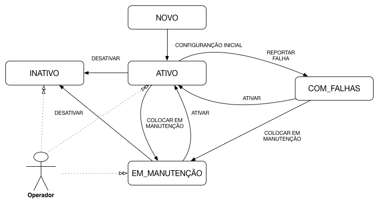
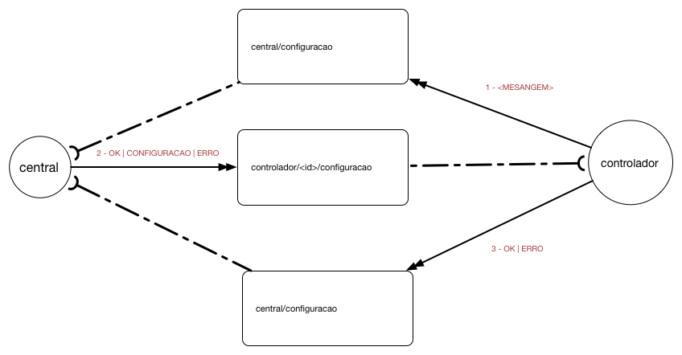
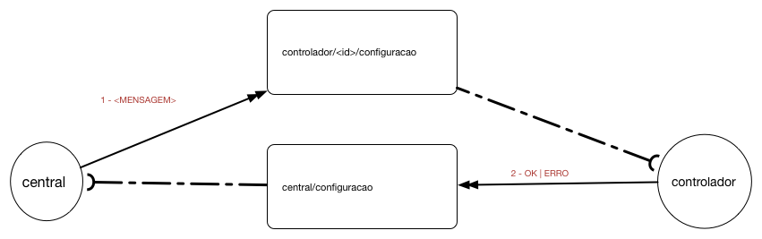

Ciclo de Vida do Controlador
O ciclo de vida do controlador define em quais status um controlador pode estar em um devido momento, bem como as possíveis transições entre esses status. Toda vez que o controlador mudar de status a central deve ser notificada. A central também pode impor mudanças nos status do controlador.
A seguir é apresentado o diagrama de estados do controlador:

Status
A tabela abaixo apresentado o significado de cada estado:
| Campo | Descrição |
|---|---|
| NOVO | O sistema foi instalado em um novo controlador, porém o mesmo ainda não recebeu sua configuração inicial |
| ATIVO | O controlador está ativo e operando normalmente |
| EM_MANUTENCAO | O controlador foi colocado em manutenção |
| COM_FALHAS | O controlador detectou uma falha de menor gravidade, porém continua operando |
| INATIVO | O controlador detectou uma falha de maior gravidade e interrompeu sua operação |
Transições
A tabela abaixo lista as possíveis transições entre os estados do controlador. O modo de disparo pode ser M (Manual) ou A (Automático). O campo mensagem descreve qual mensagem deve ser enviada para causar a transição:
| De | Para | Mensagem | Disparo | Descrição |
|---|---|---|---|---|
| - | NOVO | --- | Automático | Todo novo controlador deve começar com o status NOVO |
| NOVO | ATIVO | CONFIGURACAO INICIAL | Automático | O controlador recebeu da central sua configuração inicial e está pronto para entrar em operação |
| EM MANUTENCAO, INATIVO | ATIVO | ATIVAR | Manual | O operador enviou o comando de ativar |
| COM FALHAS | ATIVO | ATIVAR | Automático | O controlador percebeu que a falha foi sanada e que o controlador voltou a operar normalmente |
| ATIVO, COM FALHAS | EM MANUTENCAO | COLOCAR EM MANUTENCAO | Manual | O operador enviou o comando de colocar em manutenção |
| ATIVO | COM FALHAS | REPORTAR FALHA | Automático | O controlador percebeu um falha leve e continua operando mesmo assim |
| ATIVO, EM MANUTENCAO, COM FALHAS | INATIVO | INATIVAR | Manual | O operador enviou comando para inativar o controlador |
Mensagem do Ciclo de Vida: Controlador / Central

Mensagem do Ciclo de Vida: Central / Controlador

CONFIGURAÇÃO INCIAL
Quando um controlador com status NOVO se conectar à internet ele deve solicitar à central sua configuração. Para isso, deve enviar a mensagem CONFIGURACAO_INICIAL CONFIGURACAO_INICIAL para o tópico/central/configuracao.
O conteúdo da mensagem é vazio.
{}
CONFIGURAÇÃO
Essa mensagem contém todas as configurações necessárias para a operação de um controlador. Pode ser enviada como resposta à mensagem [CONFIGURACAO_INICIAL] ou quando o controlador está no estado EM_MANUTENÇÃO para atualizar sua configuração.
O conteúdo dessa mensagem está especificado no tópico Configuração do Controlador
ATIVAR
Mensagem enviada para colocar o controlador no modo de operação ATIVO. Pode ser enviada manualmente pelo operador para tirar o controlador dos estados de INATIVO e EM_MANUTENCAO, ou pelo próprio controlador ao se recuperar de uma falha.
COLOCAR EM MANUTENÇÃO
O operador pode enviar a mensagem COLOCAR_EM_MANUTENCAO para realizar manutenções programadas ou de exceção em um controlador.
REPORTAR FALHA
Quando o controlador detecta uma falha que permita que ele continue operando ele deve enviar a mensagem de FALHA ao entrar no estado COM_FALHAS.
INATIVAR
Um operador pode colocar um controlador como INATIVO. Esse estado deve ser utilizado para um controlador que não fará mais parte da rede.